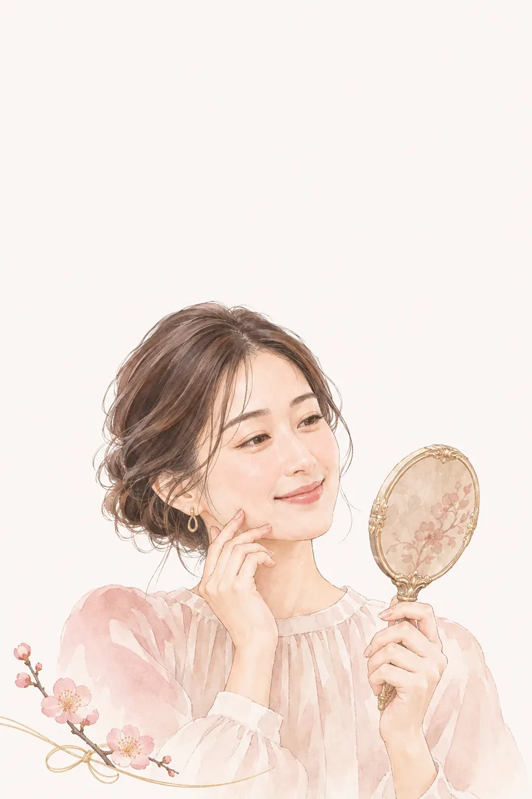
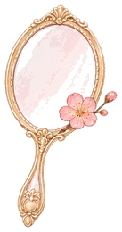
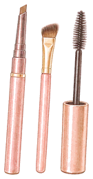
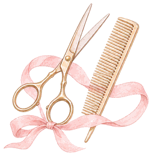
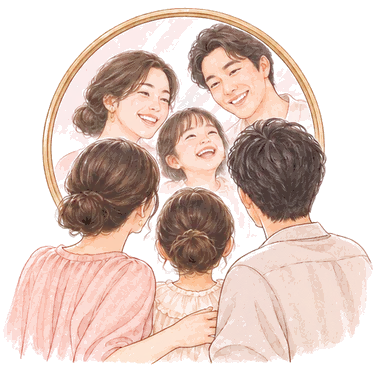

FACE BALANCE DIAGNOSIS 2027
なりたいジブン
顔バランス診断
12の質問で、あなたの顔立ちの魅力と
今年なりたい自分に近づくコツがわかります。


8つの
顔立ちタイプ
似合う
髪・眉・メイク
2027年の
なりたい自分へ
WHAT YOU'LL KNOW
この診断でわかること
- 8つの顔立ちタイプあなたの顔立ちの魅力と、チャートでの位置
- 似合うポイント髪型・眉・メイク・服の形まで
- なりたい自分に近づくコツ2027年になりたい印象へ、プロのコツ3つ
8 FACE TYPES
あなたはどの顔立ち？
← 横にすべらせて見られます →
HOW IT WORKS
顔立ちの印象は、
2つのものさしで整理できます。
- 大人っぽさ顔のたての長さ、目や鼻の大きさ・位置など。「あどけない」から「大人っぽい」まで。
- やわらかさ輪郭や目・眉・くちびるの形。丸みがあれば「やわらか」、直線的なら「シャープ」。
どこにいても、それぞれに魅力があります。良い・悪いではなく、「似合う」を見つけるための診断です。

STEP 1
何人で診断しますか？
1台のスマホで、順番に診断できます。最後にみんなの結果を1枚のチャートで比べられます。
STEP 2
あなたのことを教えてください
質問のイラスト
似合う髪型やメイクの提案も、選んだ絵に合わせて変わります。お子さまも遊べます（メイクやひげのコツは大人向けです）。
STEP 3
診断のしかたを選んでください
写真はあなたのスマホの中だけで使います。保存も送信もしません。答えの結果（タイプ名など）だけを、個人がわからない形で数えています。
正面から1枚撮ってください
- 腕をのばして、目の高さで
- 前髪を上げて、真顔で
- 明るい場所で
カメラを準備しています…
FROM YOUR PHOTO
写真から読み取った目安
8問の答えを、写真から読み取りました。光や角度で変わるので、鏡で見てちがうと思ったら選び直してください。
Q.01/ 12
写真から読み取った「目安」を選んでいます。光や角度で変わるので、鏡で見てちがうと思ったら選び直してください。
あなたの顔立ちを読み解いています
YOUR FACE BALANCE
あなたの顔立ちは
あなたは、ちょうどチャートの真ん中あたり。どの方向にも寄せられる「バランス顔」です。いちばん近いタイプを表示しています。
プロからひとこと
似合うポイント
2027 GOAL
2027年、どんな印象に
なりたいですか？
3 TIPS FOR 2027
EVERYONE
みんなの顔立ちチャート
THANK YOU